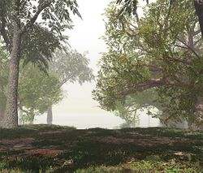

- Welcome to Touhou Wiki!
- Please register to edit. For assistance, check in with our Discord server or IRC channel.
Misty Lake
Misty Lake kiɾi no̞ mizɯᵝːmi | |
|---|---|
|
 The shore of the Misty Lake in Touhou Hisoutensoku
| |
| Location |
Next to the Youkai Mountain |
| Residents | |
Appearances | |
| Official Games | |
| |
| Print Works | |
| |
| Music CDs | |
| |
The Misty Lake (霧の湖 Kiri no Mizuumi) is a large lake located at the foot of the Youkai Mountain. Many fairies and youkai alike appear to gather here, especially during the summertime, given the abundant water. The lake and its environs appear to be the home of Cirno, Daiyousei and Wakasagihime.
General Information[edit]
Commonly, when someone says "The lake" (湖 mizuumi), it usually refers to the Misty Lake. The water in the lake comes from a river originating from the Youkai Mountain. Near by the lake is the Scarlet Devil Mansion, which is built on a ridge next to the lake itself, rather than on an island. At and around noon each day, a strange mist envelops the entire lake, making it difficult to see anything (hence the origin of the name). The origin of this mist is unknown, but it appears that because of the bad visibility, the lake isn't as big as one would think – Hieda no Akyuu states that it would take about an hour to walk the full length around the river, making its circumference about 3.1 miles (5 km)[citation needed].
Extremely large monster fish ("monster" possibly meaning youkai, as one is referred to as youkai fish in chapter 12 of Inaba of the Moon and Inaba of the Earth) live in the lake as well, and can occasionally be caught on nights of the new moon. This has led to the lake being popular amongst anglers who aim to catch such a fish. These fish range from 2 to 5 fathoms (in essence up to 9 meters), with the largest on recording as 10 fathoms (this is believed to be an exaggeration). Since then, Eirin Yagokoro's medicines in chapter 12 of Inaba of the Moon and Inaba of the Earth resulted in the largest monster fish ever recorded, big enough to attempt to swallow Cirno (about the size of a small child).
A Master of the Lake also lives there. However, his house is so deep down that only fish or amphibians may dive down there.[1]
The Lake's appearances[edit]
Games[edit]
- Embodiment of Scarlet Devil
The lake first appeared on stage 2 of Embodiment of Scarlet Devil while the heroine was looking for the Scarlet Devil Mansion. The midboss and boss of the stage is Daiyousei and Cirno respectively.
- Phantasmagoria of Flower View
The lake appeared as a stage location in Phantasmagoria of Flower View, in which it's the home location for Cirno. The stage generally appears on stage 1 or 2 in all scenarios of the game. During this event, there was no mist. Various characters will come here to look for leads towards the flower incident, only to find and defeat Cirno. In Eiki Shiki, Yamaxanadu's scenario, she'll come here to see if Cirno has been keeping up with what she (supposed to have) learnt by the yama, to which she hasn't.
- Double Dealing Character
The lake once again appeared on the first stage of Double Dealing Character, where the heroine once again encounters Cirno and meets Wakasagihime.
Spin-offs[edit]
- Shoot the Bullet
The lake appears in Shoot the Bullet on stage 2, where Aya Shameimaru encounters Cirno and Letty Whiterock to try and take photos of their danmaku. The previous stage is at the Youkai Trail, whilst the next stage is at the Giant Toad's Pond on the Youkai Mountain. There are 6 scenes total on the stage.
- Touhou Hisoutensoku
It later made its appearance in Touhou Hisoutensoku as a stage location, where Sanae Kochiya and Cirno both fight it first out at the edge of the lake as they look for their targets.
- Fairy Wars
The lake also appears in Fairy Wars on one side of it, where its stage number can be random and having the boss at the end of the stage is different.
- Impossible Spell Card
In the latest spin-off, the lake appears on the first day of Impossible Spell Card, the starting point where Seija Kijin became a rebel who must defend herself from other youkai who are trying to capture her. It is here that she learnt that she'll be facing spell cards that are considered impossible to dodge. Scene 1 of the day is a tutorial to the mechanics of the game, where Seija will face Yatsuhashi Tsukumo and must dodge a wall of danmaku using the cheating item "Nimble Fabric". On the rest of the scenes, she'll fight against both Cirno and Wakasagihime as they try to capture her with their "impossible" spell cards. There are 6 scenes total in the day. The next day is located at the path towards the Myouren Temple.
Literature[edit]
In Strange and Bright Nature Deity Cirno tried to freeze the whole lake, but while she was away the Three Fairies of Light destroyed her home, which led to the events of Fairy Wars.
Gallery[edit]
The lake in Embodiment of Scarlet Devil
The lake edge in Embodiment of Scarlet Devil
The misty-less lake in Phantasmagoria of Flower View
The lake in Shoot the Bullet
The lake in Perfect Memento in Strict Sense
Cirno's house at the edge of the lake in Strange and Bright Nature Deity
The lake in Silent Sinner in Blue
The lake in Inaba of the Moon and Inaba of the Earth
The lake on Stage 1 in Fairy Wars
The lake on Stage 2 in Fairy Wars
The lake on Stage 3 in Fairy Wars
The lake in Double Dealing Character
The lake in Impossible Spell Card
Official Sources[edit]
- 2002/08/11 Embodiment of Scarlet Devil - Stage 2
- 2005/08/14 Phantasmagoria of Flower View - Stage Location
- 2005/08/25 ~ 2006/03/25 Eastern and Little Nature Deity
- 2005/12/30 Shoot the Bullet - Stage 2 scenes
- 2006/05/26 ~ 2009/01/26 Strange and Bright Nature Deity
- 2006/12/27 Perfect Memento in Strict Sense - Perfect Memento in Strict Sense: Misty Lake
- 2007/10/22 Inaba of the Moon and Inaba of the Earth - Chapter 12
- 2009/05/26 ~ present Oriental Sacred Place
- 2009/08/15 Touhou Hisoutensoku - Stage Location
- 2009/07/28 The Grimoire of Marisa
- 2010/08/14 Fairy Wars - Various Stage Location
- 2013/08/12 - Double Dealing Character - Stage 1
- 2014/05/11 - Impossible Spell Card - Day 1
References[edit]
- ↑ Silent Sinner in Blue Chapter 16. "The master of the lake's house?" "No, only fish folk or mermaids could dive down that far," as said in the chapter is a mistranslation. Where "fish folk" and "mermaid" is used for 魚類 and 兩生類, these words simply mean fish or amphibian.